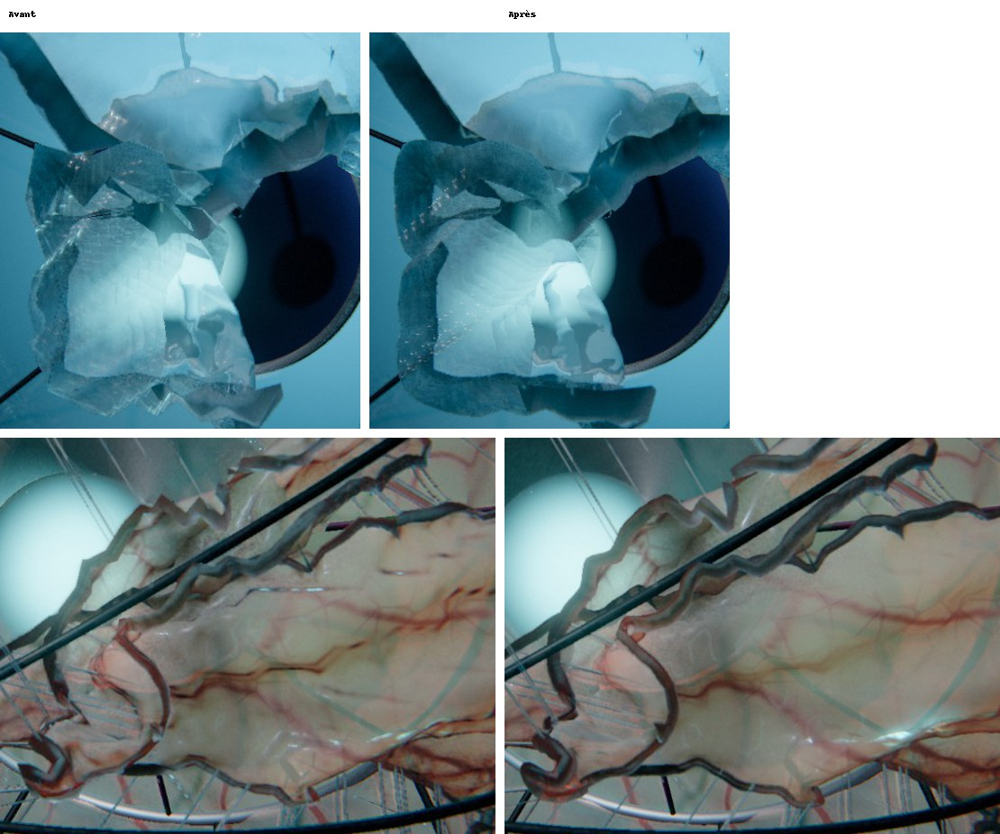
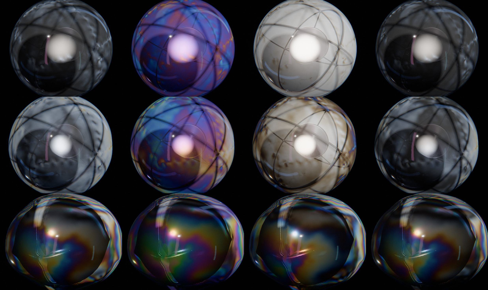

01La plongée sans fin tient dans une seule variable
src/scene/nest.js · src/main.js · choreo()La caméra traverse une couche, puis la suivante, puis la suivante, sans jamais revenir en arrière. Pour qu’une telle boucle soit parfaite, il faut que la scène redevienne exactement identique à elle-même, sans fondu. Membrane l’obtient par construction : tout dépend d’une seule grandeur, la profondeur relative \(x = d - \tau\) d’une couche, où \(d\) est son indice et \(\tau\) l’avancée de la caméra. Le rayon, l’orientation, l’instant de l’éclosion et la visibilité ne sont que des fonctions de \(x\) :
Avec \(N\) modèles différents (deux à quatre), la scène à \(\tau + N\) est celle de \(\tau\). L’éclosion se joue entre \(x = \text{open}\) (2,25 à 2,5) et \(x = -0{,}35\) : la simulation enregistrée et l’armature avancent avec \(x\), rien d’autre ne les pilote.
Reste à ne pas reconstruire de géométrie en route. Le nid dispose de \(M\) emplacements, un multiple de \(N\) assez grand pour couvrir les profondeurs visibles (huit ou neuf selon \(N\)) ; l’emplacement \(j\) montre toujours le modèle \(j \bmod N\) et vit dans l’intervalle \(x \in [-2{,}2\,;\,3{,}6[\). Il ne change de couche qu’en passant du bord \(x = -2{,}2\) (derrière la caméra, dans la brume) au bord \(x = 3{,}6\) (dans la lueur du cœur), deux endroits où il est invisible.
Un ralenti qui retombe sur ses pieds
La rupture dure une fraction de seconde ; la chorégraphie la ralentit. Le ralenti est une déformation du temps \(\tau(t)\) appliquée autour de chaque instant de rupture \(k\). Elle soustrait à \(t\) la primitive d’une bosse d’intégrale nulle :
avec \(a\) entre 0,35 et 0,75 et \(w\) entre 0,3 et 0,45 couche. Comme \(K(\pm 1) = 0\), on a \(\tau(k \pm w) = k \pm w\) : le ralenti ne décale rien au-delà de sa fenêtre, et \(\tau(t+1) = \tau(t) + 1\). La vitesse vaut \(1 - a\,K'(x)\) : exactement \(1 - a\) à la rupture, un peu plus de 1 de part et d’autre (au plus \(1 + 0{,}65\,a\)), toujours positive tant que \(a < 1\). La caméra ralentit sans jamais s’arrêter ni reculer.
choreo() portée telle quelle depuis main.js. En haut, \(d\tau/dt\) ; en bas, \(\tau(t)\) et la diagonale (pointillés). Les traits verticaux marquent les ruptures. Le centre du ralenti est réglé à la génération sur la fin moyenne des assauts de l’armature (section 04).Chaque œuf repose dans une coupe, au centre de l’armature de la couche précédente, et toutes les couches tournent à la même vitesse : leur orientation relative est fixe. Une armature qui passe derrière la caméra s’efface en fondu par un tramage renouvelé à chaque image (lissé par l’anticrénelage temporel), et son ombre s’efface avec elle. La luminance moyenne de l’image, mesurée sur une boucle entière, varie sans marche.
02La déchirure est tracée avant d’arriver
src/gen/tear.js · src/gen/prep.js · fairSeams()Un solveur de particules ne sait pas fendre un triangle en deux. Laisser la rupture choisir n’importe quelle arête donne des déchirures en escalier, à l’échelle exacte du maillage. Membrane prépare donc le maillage : chaque triangle reçoit l’étiquette du lambeau auquel il appartiendra ; les arêtes entre deux étiquettes deviennent des coutures, où les sommets sont dédoublés et tenus par des liens. La simulation décide ensuite seule de l’ordre, de la vitesse et de l’étendue de la rupture : certaines coutures ne céderont jamais.
Le motif suit l’armature. Pour un calice, les secteurs sont pris entre deux lames ; pour l’iris, l’angle est vrillé avec la colatitude et les secteurs deviennent des spirales ; pour la couronne, une perforation en étoile autour de chaque tête d’épingle, puis une cellule de Voronoï au-delà ; pour la cage, chaque face se fend de son centre vers ses sommets. L’étiquette n’est pas calculée sur la direction du triangle, mais sur cette direction déformée par un bruit fractal à quatre octaves : la coupure garde le dessin de l’armature, mais zigzague à toutes les échelles. Un second réseau, plus fin et plus résistant (60 sites au plus), greffe des embranchements près des coupures principales.
// ph, th : angles de la direction déformée
const s = wrap(ph - P.phi0 - PI / P.n - P.twist * th);
major[t] = floor(s / ((2 * PI) / P.n)) % P.n;Lisser le tracé, pas le hasard
Le bruit fractal est voulu ; le zigzag d’arête en arête ne l’est pas. Une coupure qui suit les arêtes d’une sphère géodésique désordonnée fait des dents de la taille d’un triangle, et les lèvres enroulées les rendent très visibles. Avant le dédoublement, chaque sommet d’un tracé (exactement deux voisins sur le tracé) glisse vers le milieu de ses voisins, \(p \leftarrow 0{,}45\,p + 0{,}55\,m\) ; puis les autres sommets se détendent autour, \(p \leftarrow \tfrac12 p + \tfrac12 \bar p_{\text{voisins}}\). Six passes. Les jonctions restent en place, si bien que la forme d’ensemble, donc l’irrégularité voulue, demeure.
tear.js (étiquettes, absorption des îlots) et fairSeams() de prep.js, sur un disque plan au lieu de la sphère ; le réseau secondaire est omis. Le maillage est une grille triangulaire désordonnée puis détendue, comme la sphère géodésique. À gauche le tracé brut, à droite après les six passes de lissage.
03Un fil de calcul par particule, sans atomiques
src/scene/gpusim.js · solveOne()La dynamique est de l’XPBD à petits pas : 16 sous-pas par image enregistrée, 6 passes de résolution par sous-pas, environ 20 000 particules. Les contraintes sont l’étirement (avec des longueurs au repos raccourcies : la précontrainte), la flexion entre sommets opposés de deux triangles voisins, les liens des coutures, la pression intérieure, les collisions avec l’armature et l’œuf suivant.
La manière classique de paralléliser une dynamique de positions sur GPU est de colorer le graphe des contraintes (aucune particule partagée dans une couleur) ou d’accumuler les corrections par additions atomiques. Membrane fait plus simple : un fil par particule, qui parcourt sa propre table de voisinage, calcule chaque correction de son côté et écrit dans une copie (deux tampons alternés). Pas d’atomiques, pas de coloration, et un résultat déterministe d’une machine à l’autre.
Le piège de ce schéma de Jacobi est connu : une particule reçoit une dizaine de corrections calculées indépendamment, qui visent toutes le même écart. Les additionner revient à corriger dix fois : la solution oscille, puis diverge. Membrane les moyenne et applique un facteur de sur-relaxation \(\omega = 1{,}6\) :
// Jacobi moyenné : stable quel que soit le nombre de contraintes
return x + d * (c.omega / max(1.0, nc)) + db / max(1.0, nbd);Les liens des coutures (db) sont moyennés à part, sans sur-relaxation : ils recollent les deux copies d’un sommet dédoublé tant que le lien tient.
04La membrane encaisse avant de céder
src/gen/kin.js · struggle() · src/scene/gpusim.js · bondsK()Une membrane qui se rompt au premier contact est un ballon qui éclate : l’œil ne voit ni la matière, ni l’effort. Avant de s’ouvrir, l’armature mène donc de deux à quatre assauts de plus en plus forts : elle pousse, recule, repousse. Sur la fraction \(f\) du déploiement (0,5 à 0,62), l’ouverture effective est
puis l’ouverture finale prend le reste. Le sinus carré fait partir et revenir chaque assaut à vitesse nulle. La même fonction existe trois fois, à l’identique : dans la cinématique (JS), dans le vertex shader de l’armature et dans la simulation. La membrane heurte donc exactement l’armature que l’on voit.
Pendant ce temps, la rupture est interdite, puis gardée, puis facilitée. Le seuil de chaque lien est mesuré après la mise en place (l’étirement au repos sous pression, plus une résistance propre au lien, à ±30 %). Un fil par lien compare l’étirement maximal des arêtes de ses deux particules à ce seuil, corrigé de deux facteurs :
où \(t_s\) est la fin des assauts, \(\phi = 0{,}85\) la fatigue, \(g = 0{,}7\) la garde et \(e\) le lissage quintique. Avant \(0{,}92\,t_s\), aucun lien ne peut céder. Après la première rupture, la pression fuit en \(e^{-(t - t_f)/\text{fuite}}\) et un dégrafage de l’avant fait passer le front partout, du pôle vers l’arrière.
struggle() porté tel quel, la rupture suit bondsK() (garde, fatigue, seuil mesuré après la mise en place). Les arêtes sont teintées par leur étirement ; les coutures sont les points or. En dessous, l’étirement des coutures face à leur seuil. La démo est plane et n’a ni enroulement des lèvres ni retroussement.Quand une couture s’ouvre, quelques liens laissent un filament, construit dans le vertex shader : il s’étire et s’amincit à volume constant, ploie, puis claque (six sur dix claquent tôt). Il est fait de deux tubes, un par moitié, qui partagent leur anneau du milieu tant que le fil tient. Une première version n’en avait qu’un : après le claquage, un tronçon enjambait l’écart entre les lèvres et traçait de longues lignes à travers l’image. Sur les matières humides, un fil qui s’amincit se résout en gouttelettes au pas d’environ neuf rayons (instabilité de Plateau-Rayleigh).
05Seize bits par coordonnée, une spline au ralenti
src/scene/gpusim.js · packPos(), at()La simulation n’est pas refaite à chaque image : elle est calculée une fois par couche (160 images, 3,6 s de temps physique) et enregistrée dans un tampon du GPU. À \(N\) couches de 20 000 particules, en vec4f, cela faisait 152 Mo pour trois couches. Les positions sont maintenant rangées en deux mots de 32 bits par particule, chaque coordonnée quantifiée sur 16 bits dans \([-4, 4]\) :
let q = x / 8.0 + 0.5;
return vec2u(pack2x16unorm(q.xy), pack2x16unorm(vec2f(q.z, 0.0)));Le pas vaut \(8/65\,535 \approx 1{,}2\cdot10^{-4}\) pour une membrane de rayon 1 au repos, un demi-centième d’arête. La mémoire est divisée par deux (76 Mo pour trois couches), sans différence visible.
À l’affichage, un shader de calcul pose chaque couche visible à l’image fractionnaire \(f\). Au ralenti de la rupture, une image enregistrée couvre plusieurs images affichées. Une interpolation linéaire y brise la vitesse à chaque image enregistrée : les lambeaux avancent par à-coups. La pose prend une spline de Catmull-Rom sur quatre images voisines, dont la dérivée est continue :
at() portée telle quelle). Le mouvement est un oscillateur amorti, pas une sortie de la simulation.La même passe calcule les normales (soudées à travers les coutures intactes, puis lissées sur le premier anneau : le maillage simulé est volontairement désordonné et le reflet dessinerait ses arêtes), la courbure, la dilatation de surface \(J\), l’endommagement près des coupures et les sommets des lèvres. Une couche close ou finie, dont l’image n’a pas changé, n’est pas reposée.
06Des lambeaux qui restent courbes
src/gen/tess.js · src/scene/membrane.js · pnPosition()Vingt mille particules suffisent à la dynamique, pas à la silhouette : un lambeau enroulé sur cinq ou six particules devient un polygone. Le maillage de rendu découpe chaque triangle simulé en \(n^2\) triangles (\(n = 4\) pour les couches proches, soit ×16, \(n = 2\) au loin, soit ×4), que le vertex shader pose sur le patch cubique des triangles PN (Vlachos et al., 2001). Le patch ne dépend que des positions et normales des trois coins : sur chaque arête, les points de contrôle sont les tiers de l’arête projetés sur le plan tangent de leur coin,
La normale suit une interpolation quadratique, dont les milieux d’arête sont réfléchis par le plan médian de l’arête, si bien qu’un pli en S garde son ombrage. Un sommet de coin ou d’arête est écrit sous une forme canonique, la même depuis les deux triangles qui le partagent : le shader calcule exactement la même position des deux côtés, aucune fissure. Le passage d’un niveau de détail à l’autre ne change que l’échantillonnage du même patch.
pnPosition() restreinte à une arête. Les normales sont, comme dans la pose, la moyenne de celles des segments voisins.07La contrainte devient couleur
src/scene/photo.js · src/scene/gpusim.js · STRAINUn film de polymère tendu devient biréfringent : entre deux polariseurs, la contrainte, invisible, se lit en franges colorées. Membrane le fait à partir de sa propre simulation. À chaque pose, un shader de calcul tire de chaque triangle le gradient de la déformation \(F\) (du repos à la pose), le tenseur \(b = FF^\top\), ses étirements principaux \(\lambda_1 \ge \lambda_2\) et leurs directions, et garde le déviateur logarithmique
moyenné par aire autour de chaque particule, soudé, lissé. Une tension égale dans toutes les directions ne donne rien : un œuf gonflé reste noir entre polariseurs croisés. La déformation est mesurée depuis la forme au repos, pas depuis les longueurs relâchées : un lambeau étiré plastiquement garde sa biréfringence, comme un film plastique tiré.
Au pixel, \(E\) passe dans le repère de la vue et se projette sur le plan de l’image : écart \(\Delta\), axe \(\theta\). Le retard est \(\Gamma = C\,\Delta\,h\), où \(C\) dépend de la matière (4 200 nm pour la gélatine, 2 600 pour le latex, 0 pour la bulle et l’or) et \(h\) est l’épaisseur traversée, amincie en \(1/J\) et allongée en incidence rasante. Puis vient le calcul de Jones sur 12 longueurs d’onde de 400 à 700 nm : polariseur, membrane (lame de retard), lame teinte sensible facultative (550 nm à 45°), analyseur. Les intensités sont pondérées par les fonctions colorimétriques CIE 1931 (approximation analytique de Wyman, Sloan et Shirley) et normalisées sur le blanc. On retrouve l’échelle de Michel-Lévy.
photo.js (12 longueurs d’onde). Le gonflement isotrope ne change rien aux franges, seulement à l’épaisseur. Tournez les polariseurs en linéaire : les bandes sombres de l’axe (isoclines) balaient le film ; en circulaire, il ne reste que les isochromes. En bas, l’échelle de Michel-Lévy du mode choisi, de 0 à 2 500 nm.
Chaque couche est traitée comme si elle était seule entre ses deux polariseurs : les retards de couches successives ne se composent pas. Seule la lumière qui traverse passe entre les polariseurs ; la diffusion dépolarise et le reflet reste blanc. Coût : environ 3 ms par image, et seulement si la lumière polarisée est allumée.
08Des plis plus fins que le maillage
src/scene/membrane.js · wrinkleSlope()Un film mince ne supporte pas la compression : il flambe en plis parallèles à la tension, comme un film étirable tiré entre deux doigts. Ces plis ont une longueur d’onde de l’ordre de 8 % du rayon pour l’épaisseur habituelle, à peine trois arêtes du maillage simulé : bien trop peu pour résoudre une ondulation. La simulation ne voit pas les plis, mais elle sait où la matière est comprimée, dans quel sens et de combien. La pose garde, dans le repère au repos (les plis restent attachés à la matière), le tenseur
où \(k\) est la direction de compression (vecteur propre de \(C = F^\top F\) pour la plus petite valeur propre) et \(c\) la compression au-delà de la longueur relâchée. La longueur d’onde suit la loi de Cerda et Mahadevan, \(\lambda \propto \sqrt{t\,L}\) (ici \(\lambda = 1{,}6\sqrt{0{,}2\,t}\)) : la bulle plisse fin, la gélatine large. L’amplitude \(A = (\lambda/\pi)\sqrt{c}\) fait passer dans l’ondulation le surplus de longueur de la matière comprimée.
Le motif est un bruit de phaseurs (Tricard et al., 2019) : une somme de noyaux de Gabor orientés selon \(k\), un par cellule de 1,5 λ, dont on ne garde que la phase \(\varphi\). Un bruit de Gabor ordinaire a un contraste qui varie d’un endroit à l’autre ; la phase seule donne des bandes de contraste constant, qui suivent l’orientation sans se rompre. Tout est analytique : la pente \(2\sqrt{c}\,\cos\varphi\,k\), exprimée sur l’écran par les dérivées de la position au repos (prises hors de la branche), perturbe la normale. Seuls les pixels où la pente dépasse 2° évaluent le bruit ; les plis de moins de trois pixels s’effacent.
wrinkleSlope() en deux dimensions (9 cellules au lieu de 27). Le bouton compare la phase seule à la partie réelle de la somme de Gabor : même orientation, mais un contraste qui s’éteint par endroits. L’épaisseur fixe la longueur d’onde.09Voir au travers sans tout recopier
src/scene/nest.js · src/scene/membrane.jsUne membrane est une couche mince diffusante. Son épaisseur relative vaut irrégularité × vaisseaux × fibres / \(J\) ; la transmission suit la loi de Beer-Lambert, avec l’absorption du sang (forte dans les gros vaisseaux, faible dans les capillaires). Vue de biais, elle est traversée sur une épaisseur \(h/\cos\) : la silhouette d’une peau est plus dense que son centre, et l’on distingue la membrane de ce qu’elle contient.
Ce qui est derrière une membrane est une copie de l’image, prise juste avant de la dessiner, avec ses niveaux de mipmap pour la part diffusée. Pour que les couches intérieures y figurent déjà, l’ordre de dessin est fixé : armatures et filaments, puis les faces arrière de l’extérieur vers l’intérieur, puis les faces avant de l’intérieur vers l’extérieur. Le flou dépend de la distance, lue dans une copie de la profondeur propre à chaque couche : une lame qui touche la membrane reste nette, le lointain se dissout.
Six à huit copies par image coûtaient cher. Quand la caméra est hors d’une couche (\(x > 0{,}35\)), sa face arrière n’est vue qu’au travers de sa face avant, qui réfracte et floute déjà : une copie propre à la face arrière ne servirait qu’à flouter deux fois. Elle se mélange alors directement à l’image, par le matériel : lumière propre + fond × transmission moyenne.
Entre \(x = 0{,}10\) et \(0{,}35\), la version avec copie perd progressivement réfraction, flou, teinte, plis et reflets en espace écran, jusqu’à donner exactement l’image de la version mélangée, brume comprise. Mesuré de part et d’autre du seuil, l’écart est celui de deux images voisines. Gain : 3,5 ms par image. La version mobile pousse l’idée aux faces avant lointaines (au-delà de \(x = 0{,}8\)), en deux passages pour garder la teinte : sur un GPU à tuiles, chaque copie vide la mémoire de tuile.
Les dérivées écran d’une normale interpolée sont constantes par triangle : un anticrénelage spéculaire classique dessinerait les facettes dans le reflet d’une peau humide. La variance de la normale dans le pixel est tirée de la courbure calculée par sommet à la pose, continue d’un triangle à l’autre, et de la taille du pixel à cette distance, allongée en incidence rasante.
10Budget
La préparation tourne dans un worker, la simulation sur le GPU pendant l’écran de chargement ; le rendu ne fait que relire et poser.
| Étape | Où | Coût |
|---|---|---|
| Préparation d’une couche (maillage, motif, coutures, tables, poses de l’armature), 20 000 particules | worker | 0,4 s |
| Simulation d’une couche (160 images, 16 sous-pas, 6 passes) | GPU | ~5 s |
| Scène de trois couches prête (panneau de navigateur masqué, donc ralenti) | GPU | 15 à 20 s |
| Images enregistrées, 16 bits par coordonnée | mémoire | ~25 Mo / couche |
| Image complète, qualité haute, 1,9 Mpx, plis compris (32 ms avant les économies) | GPU | ~26 ms |
| dont reflets en espace écran | GPU | 3,4 ms |
| dont copies de l’image (6 avant les faces arrière mélangées) | GPU | ~2,5 ms |
| dont maillage fin des couches proches (×16) | GPU | 1,1 ms |
| dont bloom · plis · occlusion ambiante (8 échantillons) | GPU | 0,7 · 0,6 · 0,5 ms |
| Photoélasticité (déformation et intégration spectrale), si allumée | GPU | ~3 ms |
La version mobile simule un maillage plus grossier (36 subdivisions au lieu de 44, deux tiers des particules), 120 images au lieu de 160, 13 sous-pas au lieu de 16 : préparation, calcul et mémoire presque divisés par deux, avec la même dynamique de déchirure. Les plis y évaluent 8 cellules au lieu de 27, la photoélasticité 7 longueurs d’onde au lieu de 12.